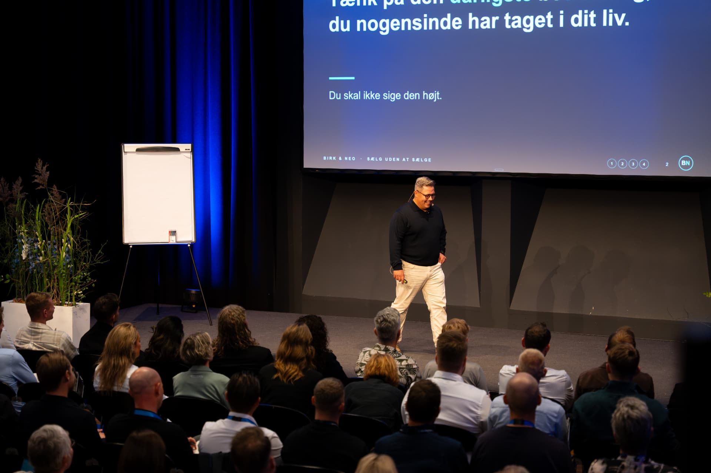

Jeg underviser i beslutningspsykologi
Jeg hjælper sælgere, rådgivere og ledere med at forstå, hvordan kunder træffer beslutninger. Så de sælger til flere kunder, uden at presse nogen.
- 28.000+følgere på LinkedIn
- 251anbefalinger på LinkedIn
- 4,6på Trustpilot
- 600+virksomheder trænet
Jeg har trænet hold hos


“Rettidig omhu i salg er at holde mund og lytte efter, hvad kunden siger. Og kun sælge noget, hvis du ved, at du kan hjælpe kunden.”
Sådan arbejder jeg
- IPraksis frem for teori
De fleste salgskurser varer en til tre dage og giver teori og modeller. Jeg træner det, der sker i jeres egne samtaler, og hvordan det bliver sagt.
- IIForankring over tid
Vaner, der er bygget over mange år, ændrer sig ikke på tre dage. Derfor følger jeg op over måneder, til det sidder.
- IIIPsykologisk tryghed
Teknikker, der får kunden til at tale og uddybe. Når kunden føler sig set, hørt og forstået, køber kunden af sig selv.
“Jeg har arbejdet i mere end 20 år i salgsbranchen og mødt rigtig mange salgstrænere, men aldrig en som Lasse Birk.”
Allan Damborg · Group CEO, Generaxion
Hvad ledere siger om mig
“Lasse er en enestående, dygtig og passioneret salgstræner. Han går nye veje og har sit helt eget DNA.”
“Sjældent har jeg oplevet salgstræning blive så konkret - og jeg kan kun anbefale Lasse.”
“Vi havde ikke været, hvor vi er i dag uden Lasses træning.”
“DTU Learn for Life valgte BirkNeo som samarbejdspartner efter grundigt at have undersøgt markedet.”
“Hans evne til at inddrage både teoretiske og praktiske metoder på en så engageret måde, åbner bestemt for nogle nye perspektiver.”
“Dejligt med en instruktør som ikke kun er teoretisk men også viser hvordan man gør det.”

“Prøv forskellige salgstrænere, og find ud af, hvem du arbejder bedst sammen med. Jeg har selv købt salgstræning af rigtig mange, fordi jeg vil lære af alle.”


To måder at arbejde med mig
For dig selv
Neurosalg er til selvstændige, til sælgere uden salgstræning, hvor de sidder, og til ledere, der vil have inspiration til deres team. Masterclass, community og live-træning med mig hver mandag.
9.200 kr.ekskl. moms · én betaling · livstidsadgang
Se Neurosalg →For jeres salgsteam
Tre dages træning med mig og derefter opfølgning i jeres egne møder over 3, 6 eller 12 måneder. Det første møde tager jeg selv.
Fra 141.000 kr.ekskl. moms
Se forløbet →